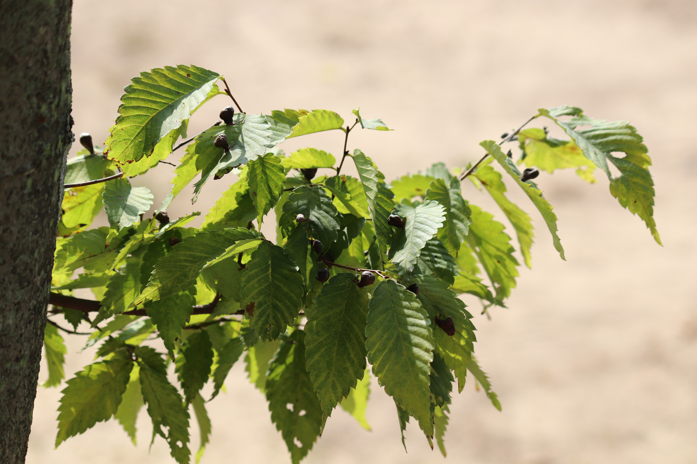

쌍떡잎식물 무환자나무목 감탕나무과
밤나무(Castanea crenata)
“맛있는 밤이 달리는 나무”
높이 10∼15m, 지름 30∼40cm에 달하며 산기슭이나 밭둑에서 자라고 나무껍질은 세로로 갈라진다. 작은 가지는 자줏빛을 띤 붉은 갈색이며, 짧은 털이 생기지만 나중에 없어진다.
꽃은 암수한그루로서 6월에 핀다. 수꽃은 꼬리 모양의 긴 꽃이삭에 달리고, 암꽃은 그 밑에 2∼3개가 달린다. 열매는 9∼10월에 익으며, 1송이에 1개 또는 3개씩 들어 있다.